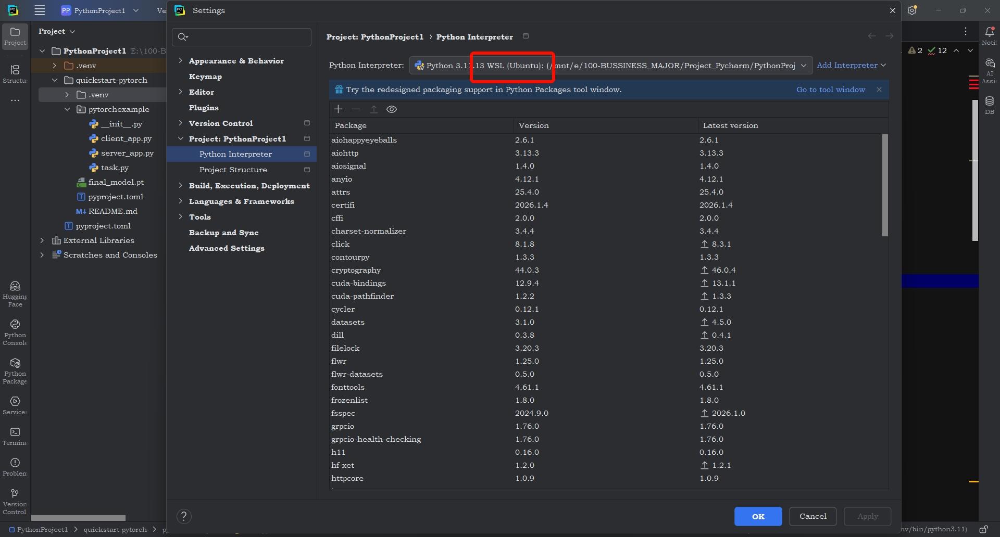
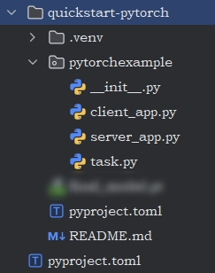
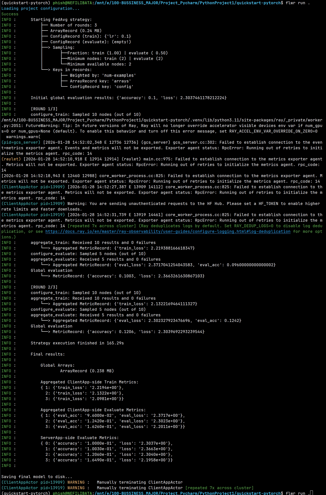
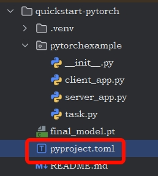
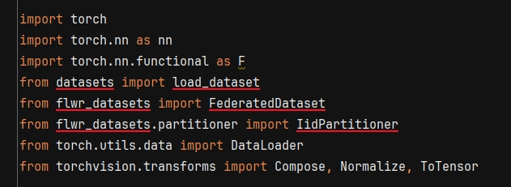

My undergraduate thesis investigates an unsupervised cross-modal hashing method combined with federated learning to enable text- and image-based retrieval of heterogeneous data from multiple hospitals. I found a open-source project about relative code, but I feel so boring to just run it and change datasets. So after a period of investigation, i decided to use Flower Framework reconstruct the original code, to make it more clean and structed.
In this note, I’ll mark down the learning process about Flower Framework , and the whole reconstruct process.
2026-01-28
now i am trying to get the code from the tutorial named quickstart-pytorch running. My OS is Win11, for the better compatibility, i choose to config venv via wsl

This function of Pycharm is useful, which enable me to using pycharm in window and virtual environment in WSL.
After install uv and Flower Framework, run this to install a fast example about flwr framework based on pytorch:
flwr new @flwrlabs/quickstart-pytorchrun example code: quickstart-pytorch
| install some python packages necessary, the file architecture would looks like this. cd ./quickstart-pytorch and flwr run . |  |
$ flwr run .We are gonna learning the meaning of the output, and then go back to have a look at code.
The Whole output during training
it is long and complicated at a first glance, let’s split it. 
🏃🏻♂️Understand_the_Output: Loading project configuration…
Loading project configuration...
Success|  | The configuration lie in file pyproject.toml, like: [tool.flwr.app.config] num-server-rounds = 3 fraction-evaluate = 0.5 local-epochs = 1 learning-rate = 0.1 batch-size = 32 |
[tool.flwr.app.config]
num-server-rounds = 3
fraction-evaluate = 0.5
local-epochs = 1
learning-rate = 0.1
batch-size = 32num-server-rounds: the total training rounds of sever end.fraction-evaluate: the percentage of clients participating in the evaluation in each round.local-epochs: the client would train 1 or more epochs, and upload the model to the sever.
Q&A
What’s the main steps?
According to the official tutorial What is Federated Learning? - Flower Framework. There are mainly 5 steps while training:
- Step 0: Initial global model
- Step 1: Send model to a number of connected organizations/devices (client nodes)
- Step 2: Train model locally on the data of each organizations/devices (client nodes)
- Step 3: Return model updates back to the server
- Step 4: Aggregate model updates into a new global model
- Step 5: Repeat steps above until the model converges.
What does Evaluation mean here?
Exactly the Evaluation process can be put after local training step (Step 2) and model aggregation (Step 4). There are 2 kinds of evaluation:
- Federated Evaluation (Client End): After each round of aggregation, the server select a portion of clients (like 50% if
fraction-evaluate = 0.5), send global model to them and use the local evaluation dataset of each client to evaluate the model. The server will got the result and understand the performance of global model on every client. - Centralization Evaluation (Server End): After each round of aggregation, the server got newest global model, and use the whole evaluation dataset at the server end to evaluate the global model, return a evaluation result to monitor the global model.
Federated evaluation - Flower Framework provides some additional content.
🏃🏻♂️Understand_the_Output: Starting FedAvg strategy
INFO : Starting FedAvg strategy:
INFO : ├── Number of rounds: 3
INFO : ├── ArrayRecord (0.24 MB)
INFO : ├── ConfigRecord (train): {'lr': 0.1}
INFO : ├── ConfigRecord (evaluate): (empty!)
INFO : ├──> Sampling:
INFO : │ ├──Fraction: train (1.00) | evaluate ( 0.50)
INFO : │ ├──Minimum nodes: train (2) | evaluate (2)
INFO : │ └──Minimum available nodes: 2
INFO : └──> Keys in records:
INFO : ├── Weighted by: 'num-examples'
INFO : ├── ArrayRecord key: 'arrays'
INFO : └── ConfigRecord key: 'config'ArrayRecord (0.24 MB): a container that stores model parameters (weights) transmitted between server and clients. For PyTorch, this contains thestate_dict. Size varies by model complexity (e.g., 0.24 MB for a simple CNN).- Flow:
Server → ArrayRecord → Client → Client trains → ArrayRecord → Server → Aggregate → Repeat
INFO : ├──> Sampling:
INFO : │ ├──Fraction: train (1.00) | evaluate ( 0.50)
INFO : │ ├──Minimum nodes: train (2) | evaluate (2)
INFO : │ └──Minimum available nodes: 2- Sampling: Sampling determines which clients participate in each round.
| Parameter | Value | Meaning |
|---|---|---|
| Fraction: train | 1.00 | 100% of clients train |
| Fraction: evaluate | 0.50 | 50% of clients evaluate |
| Minimum nodes: train | 2 | Need 2+ clients to train |
| Minimum nodes: evaluate | 2 | Need 2+ clients to evaluate |
INFO : └──> Keys in records:
INFO : ├── Weighted by: 'num-examples'
INFO : ├── ArrayRecord key: 'arrays'
INFO : └── ConfigRecord key: 'config'-
Keys in Records: When server and clients communicate, they use keys to identify data types.
-
Weighted by ‘num-examples’: Clients with more data have more influence in aggregation — Weighted AvgFed strategy
-
ArrayRecord key ‘arrays’: Identifier for model parameters
-
ConfigRecord key ‘config’: Identifier for configuration (like
lr)
This ensures each data example has equal influence.
Q&A
- What is record?
- Does each local client and the server have an instance of this ArrayRecord object?
- What ArrayRecord key ‘arrays’ looks like?
- What ArrayRecord looks like?
What does record mean here?
Record can be thought of as the messages passed between client and server while training. There are 3 kinds of record:
ArrayRecord: can be easily thought of as “ParametersRecord”MetricRecord: metric for training / evaluationConfigRecord: configurationRecordDict: RecordDict - Flower Framework
🏃🏻♂️Understand_the_Output: Initial global evaluation results
INFO : Initial global evaluation results: {'accuracy': 0.0996, 'loss': 2.3053594118432152}refer to What’s the main steps?
🏃🏻♂️Understand_the_Output: smth about ray
FutureWarning
FutureWarning: Tip: In future versions of Ray, Ray will no longer override accelerator visible devices env var if num_gpus=0 or num_gpus=None (default). To enable this behavior and turn off this error message, set RAY_ACCEL_ENV_VAR_OVERRIDE_ON_ZERO=0Failed to establish connection to the metrics exporter agent. Metrics will not be exported.Unauthenticated requests
Warning: You are sending unauthenticated requests to the HF Hub. Please set a HF_TOKEN to enable higher rate limits and faster downloads. [repeated 3x across cluster]🏃🏻♂️Understand_the_Output: [ROUND ?/3]
INFO : [ROUND 2/3]
INFO : configure_train: Sampled 10 nodes (out of 10)
INFO : aggregate_train: Received 10 results and 0 failures
INFO : └──> Aggregated MetricRecord: {'train_loss': 2.1322169464111327}
INFO : configure_evaluate: Sampled 5 nodes (out of 10)
INFO : aggregate_evaluate: Received 5 results and 0 failures
INFO : └──> Aggregated MetricRecord: {'eval_loss': 2.302327923476696, 'eval_acc': 0.1242}
INFO : Global evaluation
INFO : └──> MetricRecord: {'accuracy': 0.1206, 'loss': 2.3039692293239544}
...
...
Saving final model to disk...
(ClientAppActor pid=13909) WARNING : Manually terminating ClientAppActor
(ClientAppActor pid=13919) WARNING : Manually terminating ClientAppActor [repeated 7x across cluster]Complete training
2026-01-29
learn example code: quickstart-pytorch
The example use CIFAR-10 dataset, to train a simple convolutional neural network (CNN), simulating having multiple datasets from multiple organizations (also called the “cross-silo” setting in federated learning).
|  | Here use the Flower Datasets library (flwr-datasets) to partition CIFAR-10 into ten partitions FederatedDataset. All the load data code is complete in task.py |
Using the load_data() function defined in task.py, we will create a small training and test set for each of the ten organizations and wrap each of these into a PyTorch DataLoader